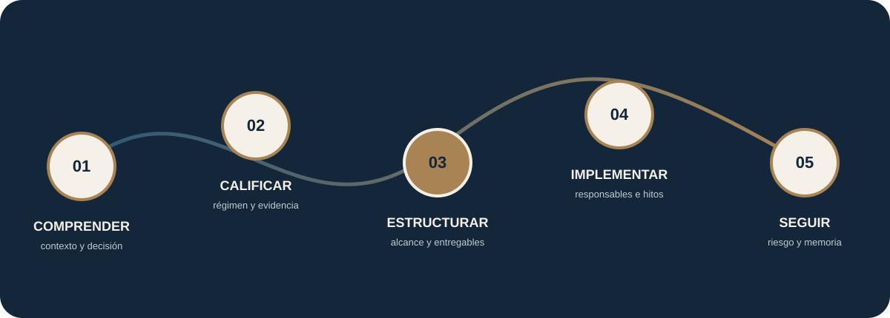

8 serviciosespecializados
DERECHO · EMPRESA · TECNOLOGÍA
Dirección jurídica para empresas que avanzan.
Integramos criterio jurídico, lectura empresarial y seguimiento para convertir decisiones complejas en estructuras, documentos, responsables y rutas de implementación administrables.
Alcance verificableSupervisión profesionalEntregables ejecutivosSeguimiento trazable

El trabajo jurídico debe ayudar a decidir y también poder ejecutarse.Contexto · riesgo · evidencia · implementación
8 productosde alcance cerrado
5 planesrecurrentes
8 sectorescon lectura operativa
Centro demoy portal demostrativo
Meridiano es especialmente útil cuando la decisión jurídica está conectada con crecimiento, inversión, operación o regulación.No es necesario conocer previamente el servicio correcto: el punto de entrada puede definirse desde la necesidad.
PUNTO DE ENTRADA POR NECESIDAD
Empiece por la situación empresarial, no por el nombre del servicio.
Estas seis rutas explican qué señales observar, qué decisiones deben resolverse y qué modalidad jurídica puede encajar antes de solicitar una propuesta.
01Ordenar el riesgo jurídico
La empresa creció, acumuló contratos, decisiones, obligaciones o documentos y ya no es evidente qué riesgo debe resolverse primero.
Ver ruta de decisión →02Dirección jurídica externaLa gerencia tiene asuntos jurídicos recurrentes que atraviesan contratos, gobierno, obligaciones y decisiones, pero no justifica o no desea ampliar de inmediato su estructura interna.
Ver ruta de decisión →03Gobernar el uso de IALa empresa está adoptando herramientas o desarrollando casos de IA y necesita gobernarlos antes de que el uso se disperse entre áreas, proveedores y datos sin criterios comunes.
Ver ruta de decisión →04Prepararse para inversiónExiste una conversación de inversión, una ronda prevista o un proceso de crecimiento que exige demostrar titularidad, gobierno, documentación y capacidad de ejecutar acuerdos.
Ver ruta de decisión →05Estructurar un proyecto reguladoEl proyecto tiene una oportunidad técnica o comercial, pero su viabilidad jurídica depende de permisos, habilitaciones, competencias, contratos y actuaciones que no pueden analizarse como una lista independiente.
Ver ruta de decisión →06Ordenar la operación jurídicaEl problema ya no es una consulta jurídica aislada: hay volumen de solicitudes, documentos, vencimientos y aprobaciones que dependen de personas, correos y memoria individual.
Ver ruta de decisión →Ver las seis rutas completas →Producto cerrado · servicio especializado · plan recurrente
ANTES DE CONTRATAR
La prueba pública debe poder revisarse, no solo prometerse.
Por eso la web expone alcance, método, límites, conocimiento sectorial y una demostración ficticia antes de pedir información confidencial.
16 fichas profundasServicios y productos con alcance, entregables, responsabilidades y límites.8 lecturas sectorialesDecisiones, dependencias y riesgos conectados con la operación.6 perspectivas desarrolladasCriterio jurídico explicado antes de una conversación comercial.Centro DemoRecorrido con información ficticia para visualizar método, entregables y seguimiento.
CÓMO ELEGIR
Cuatro formas de empezar. Elija por resultado, no por nombre del servicio.
La modalidad adecuada no depende solo del tema jurídico. También depende de la urgencia, la evidencia disponible, el resultado esperado y si la necesidad es puntual, de proyecto o recurrente.
Una pregunta concreta
Para delimitar el problema, identificar riesgos iniciales y decidir el siguiente paso.
- Útil cuando
- La decisión es focal.
- Resultado
- Criterio y ruta inmediata.
- Horizonte
- Sesión o alcance breve.
Un asunto complejo o a la medida
Para análisis, negociación, estructuración o implementación que no puede reducirse a un paquete estándar.
- Útil cuando
- Existen varios actores o riesgos.
- Resultado
- Intervención profesional definida.
- Horizonte
- Según asunto e hitos.
Un resultado delimitado
Para necesidades recurrentes que pueden resolverse con metodología, entregables y exclusiones predefinidas.
- Útil cuando
- El resultado puede cerrarse.
- Resultado
- Paquete verificable.
- Horizonte
- 2 a 12 semanas.
Capacidad jurídica continua
Para empresas que necesitan memoria, priorización, atención periódica y control de obligaciones.
- Útil cuando
- La demanda es recurrente.
- Resultado
- Gobierno y seguimiento.
- Horizonte
- Mensual o trimestral.
PRODUCTOS DE ALCANCE CERRADO
Resultados definidos, metodología y límites explícitos.
Cada producto parte de una pregunta ejecutiva y termina en entregables verificables. Las fichas indican duración orientativa, exclusiones y relación con el servicio profesional correspondiente.
Auditoría Jurídica Empresarial Integral
Revisión transversal con hasta 80 hallazgos, cinco instrumentos correctivos y plan jurídico de 90 días.
Ver ficha completaEmpresa Jurídicamente Organizada
Gobierno, atribuciones, contratos, obligaciones y expediente jurídico organizados como sistema operativo.
Ver ficha completaMarca, Software y Activos Intangibles Protegidos
Inventario, titularidad, protección, licencias y evidencia para hasta 40 activos intangibles priorizados.
Ver ficha completaEmpresa Lista para Inversión
Red flags, cap table, contratos materiales, regularizaciones y data room jurídico antes de una inversión.
Ver ficha completaPrograma de Gobernanza Jurídica y Uso Responsable de IA
Hasta 25 casos de uso, clasificación de riesgo, reglas de uso, proveedores, controles, incidentes y capacitación.
Ver ficha completaProyecto Regulado Jurídicamente Estructurado
Autoridades, permisos, predios, contratos, condiciones precedentes y ruta habilitante del proyecto.
Ver ficha completaSistema Contractual Empresarial
Seis modelos, biblioteca de cláusulas, playbook, aprobaciones, hasta 100 obligaciones y repositorio contractual.
Ver ficha completaPrograma de Datos, Consumidor y Canales Digitales
Tratamientos, bases, términos, PQR, incidentes, proveedores y evidencia operativa para datos y consumidor.
Ver ficha completaQUÉ RECIBE LA EMPRESA
Entregables diseñados para decidir, ejecutar y controlar.
La forma cambia según el asunto, pero el trabajo debe poder comprenderse, aprobarse, implementarse y revisarse. Las fichas profundas detallan cantidades, formatos, responsables, límites y criterios de cierre.
Concepto o informe ejecutivo
Hechos, supuestos, régimen aplicable, riesgos, alternativas, conclusión y condiciones para decidir.
Criterio sustentadoInstrumento jurídico
Contrato, política, acta, acuerdo, protocolo o paquete documental conectado con la operación.
Reglas que pueden ejecutarseHoja de ruta
Hitos, dependencias, responsables, evidencia, fechas, aprobaciones y condiciones de cierre.
Del análisis a la acciónMatriz o tablero
Riesgos, obligaciones, decisiones, vencimientos, responsables, estado y evidencia de seguimiento.
Memoria y trazabilidadMERIDIANO EMPRESAS · DEMOSTRACIÓN
Vea cómo se organiza el trabajo jurídico después del concepto o del documento.
La propuesta no termina en archivos sueltos. El entorno demostrativo muestra cómo un asunto puede conectar contexto, riesgos, decisiones, obligaciones, documentos, responsables y próximos hitos.
Interfaz ilustrativa y datos ficticios. La web pública no recibe expedientes ni información confidencial.Meridiano EmpresasEntorno demostrativo
ResumenExpedienteRiesgosObligacionesDocumentosDecisiones
ASUNTO DEMOSTRATIVOEstadoEn estructuración Próximo hitoValidación documental GobiernoDirección + responsable interno 1Contexto y hechosFuente identificada 2Riesgos y dependenciasPriorizados 3Decisiones y responsablesAsignados 4Evidencia y cierreTrazables
Proyecto de expansión empresarial
PLANES RECURRENTES
Capacidad jurídica mensual con volumen, gobierno y límites definidos.
Los planes convierten una demanda jurídica recurrente en capacidad programada. Cada propuesta confirma horas, responsables, canales, niveles de servicio, materias incluidas, exclusiones y reglas de escalamiento.
Plan Esencial
$ 2.800.000 COPmensuales · más IVA cuando aplique
6 horas / mesPara empresas con demanda jurídica preventiva focal y necesidad de contar con un canal profesional estable.
- Orientación y revisión jurídica dentro de la capacidad contratada.
- Priorización de solicitudes y alertas materiales.
- Seguimiento básico de pendientes y decisiones.
- Canal y tiempos de respuesta definidos en la propuesta.
Plan Empresarial
$ 5.200.000 COPmensuales · más IVA cuando aplique
14 horas / mesPara operaciones con contratos, decisiones societarias, obligaciones y consultas que requieren atención recurrente.
- Atención preventiva y revisión documental priorizada.
- Apoyo contractual y societario dentro del perímetro.
- Control de pendientes, renovaciones y decisiones críticas.
- Resumen periódico de asuntos abiertos y próximos hitos.
Plan Dirección
$ 8.500.000 COPmensuales · más IVA cuando aplique
25 horas / mesPara empresas que requieren una dirección jurídica externa integrada con gerencia, áreas internas y decisiones estratégicas.
- Comité jurídico periódico con agenda ejecutiva.
- Triage, priorización y coordinación de asuntos.
- Tablero de riesgos, obligaciones, decisiones y vencimientos.
- Coordinación de especialistas externos cuando sea necesaria.
Plan Regulado
Desde $ 12.000.000 COPmensuales · más IVA cuando aplique
35 horas / mes de referenciaPara proyectos y operaciones sujetos a permisos, autoridades, obligaciones periódicas y dependencias regulatorias relevantes.
- Seguimiento regulatorio y matriz de obligaciones.
- Coordinación de permisos, hitos y actuaciones jurídicas.
- Revisión contractual asociada al proyecto.
- Comité de seguimiento y alertas de viabilidad.
Banco Documental y Legal Operations
Alcance a medidaimplementación y soporte recurrente
Capacidad según procesos y usuariosPara organizaciones que necesitan gobernar plantillas, solicitudes, versiones, aprobaciones, obligaciones, indicadores y ciclos de actualización.
- Catálogo de servicios, flujos y responsables.
- Banco documental con versiones y permisos.
- Indicadores, expedientes y mecanismos de seguimiento.
- Soporte de adopción y mejora continua.
Capacidad y excedentes. Los planes no implican disponibilidad ilimitada. La propuesta define consumo de horas, canales, SLA, materias incluidas, exclusiones y escalamiento. Como referencia, las horas adicionales se cotizan en $350.000, $450.000 o $550.000 COP según complejidad y especialidad.
REFERENCIAS DE HONORARIOS
Precios visibles para orientar la decisión antes de solicitar una propuesta.
Las cifras son orientativas y sirven para dimensionar el punto de entrada. El valor definitivo depende del perímetro, volumen, complejidad, urgencia, revisiones, terceros, especialidades e implementación requeridos.
Entrada y priorización
- Diagnóstico jurídico profesional
- $ 3.500.000
- Mayor complejidad o perímetro ampliado
- Desde $ 5.000.000
Gobernanza de inteligencia artificial
- Diagnóstico de IA
- $ 4.500.000
- Política de IA
- Desde $ 3.500.000
- Programa integral de gobernanza
- $ 12–25 millones
- Seguimiento recurrente
- Desde $ 3.500.000 / mes
Activos y relaciones entre socios
- Marca
- Desde $ 1.200.000 + tasas
- Paquete Marca Protegida
- $ 2.500.000 + tasas
- Acuerdo de accionistas
- $ 4–8 millones
Documentos guiados y conceptos
- Acuerdo de confidencialidad
- $ 600.000
- Prestación de servicios
- $ 900.000
- Suministro
- $ 1.200.000
- Distribución
- $ 1.500.000
- Cesión o licencia de software
- $ 1.800.000
- Términos y condiciones
- $ 2.000.000
- Datos personales
- $ 2.000.000
- Concepto jurídico
- $ 2.500.000
Condición comercial. Valores expresados en pesos colombianos, orientativos y sujetos al alcance definitivo y al IVA cuando corresponda. Tasas oficiales, gastos, desplazamientos, peritos, corresponsales y otros terceros se cotizan por separado salvo inclusión expresa.
CÓMO SE CONTRATA
De la necesidad al inicio, sin alcances implícitos.
Antes de comenzar se deja por escrito qué problema se atenderá, qué se entregará, cuánto cuesta, qué depende del cliente o de terceros y cuándo se considera cerrado el alcance.

Presente el resultado esperado.
Decisión, plazo, actores y contexto general. En esta etapa no es necesario remitir documentos confidenciales.
Salida: punto de entrada preliminar.Validamos encaje y condiciones.
Se revisan disponibilidad, conflictos, urgencia, perímetro, información necesaria y especialidades que puedan intervenir.
Salida: modalidad y alcance a cotizar.Todo lo material queda definido.
Entregables, cantidades, revisiones, cronograma, responsables, honorarios, forma de pago, supuestos, exclusiones, SLA y gastos de terceros.
Salida: propuesta profesional verificable.La ejecución comienza con aceptación expresa.
Se realizan las verificaciones aplicables, se habilita el canal seguro, se solicita la información de apertura y se programa el primer hito.
Salida: onboarding y plan de trabajo.Una conversación no convierte por sí sola una necesidad en un mandato abierto.La relación profesional se rige por el alcance y las condiciones expresamente aceptadas.
Presentar necesidad →EXPERIENCIA SECTORIAL
El derecho debe conversar con la operación y el modelo de negocio.
La experiencia sectorial mejora las preguntas y la identificación de dependencias. Cada asunto exige validar específicamente el régimen, los hechos, la fecha y la evidencia.
Desarrollo, licencias, datos, proveedores, activos y gobernanza.
Explorar sectorModelos operativos, actores territoriales, habilitaciones, contratos, obligaciones y aprovechamiento.
Explorar sectorSolicitudes, procesos, documentos, obligaciones, métricas, automatización y gestión del cambio.
Explorar sectorProducción, comercialización, alianzas, activos y regulación sectorial.
Explorar sectorPrestadores, alianzas, experiencia del usuario, datos y riesgo regulatorio.
Explorar sectorActores, convenios, competencias, cronogramas y cumplimiento.
Explorar sectorCanales, consumidor, garantías, marca, metas, territorio y terminación.
Explorar sectorFundadores, capital, gobierno, activos, contratos y preparación para inversión.
Explorar sectorPERSPECTIVAS
Ideas para dirigir el riesgo antes de que se convierta en fricción.
Contenido general y educativo. Las conclusiones aplicables dependen de hechos, documentos, jurisdicción y fecha.
Usar inteligencia artificial no es solo contratar una herramienta.
Inventario de casos, datos, impacto sobre personas, supervisión, contrato, incidentes y trazabilidad.
Leer perspectiva completaUn contrato debe poder administrarse después de la firma.
La negociación debe terminar en obligaciones, responsables, evidencia, cambios, preavisos y alternativas de salida.
Leer perspectiva completaLa viabilidad jurídica depende de una secuencia, no de una lista de permisos.
Actividad, territorio, autoridades, actores, contratos, condiciones precedentes y cronograma técnico.
Leer perspectiva completaLA FIRMA
Una práctica jurídica construida alrededor de decisiones empresariales complejas.
Meridiano Legal conecta criterio profesional, estructura empresarial, conocimiento sectorial y herramientas de seguimiento para que el trabajo jurídico no termine en una respuesta aislada.
Antes de proponer un contrato, un trámite o una política, calificamos la relación, el régimen aplicable, los actores, la evidencia y el resultado esperado. Cada intervención define alcance, entregables, responsabilidades, límites y condiciones de cierre.
PREGUNTAS FRECUENTES
Claridades antes de iniciar.
Estas respuestas explican el proceso general. El alcance profesional solo se define después de comprender la necesidad y realizar las verificaciones correspondientes.
¿Debo saber qué servicio necesito?
No. Puede presentar la decisión, el problema o el resultado esperado. Meridiano determina si corresponde una orientación, un diagnóstico, un proyecto, un producto cerrado, un plan recurrente o la remisión a otra especialidad.
¿La primera conversación ya constituye asesoría jurídica?
No necesariamente. La primera conversación busca comprender contexto, urgencia, actores, disponibilidad y posibles conflictos. La relación profesional comienza con aceptación expresa del alcance, honorarios y condiciones aplicables.
¿Cómo se define el precio?
Publicamos referencias de honorarios para facilitar una primera decisión. El valor definitivo se confirma después de delimitar resultado, perímetro, volumen, complejidad, urgencia, revisiones, actores, especialidades, implementación y seguimiento. Los productos cerrados y los planes recurrentes permiten mayor estandarización; los servicios a medida se cotizan por asunto, proyecto, hitos o capacidad.
¿Meridiano garantiza permisos, registros, financiación o resultados frente a terceros?
No. Las decisiones de autoridades, registros, contrapartes, jueces, inversionistas y terceros no dependen exclusivamente del trabajo profesional. El alcance debe indicar expresamente estos límites.
¿Puedo enviar documentos confidenciales desde esta página?
No. La web pública y la demostración son estáticas. La información confidencial y los archivos solo deben compartirse después de validar identidad, conflicto, alcance y canal seguro.
¿Meridiano puede trabajar con el abogado interno o con otros especialistas?
Sí. El modelo puede complementar equipos internos y coordinar especialistas técnicos, tributarios, financieros, judiciales o sectoriales cuando el asunto lo requiera, delimitando responsabilidades.
CONTACTO
Presente la necesidad. La información confidencial se solicita después de validar contexto y canal.
La primera conversación busca comprender la decisión, la urgencia, los actores y la disponibilidad. La relación profesional solo comienza con aceptación expresa del alcance y las verificaciones aplicables.